Mathematical framework
State
Each tumor cell is a point x=(h,v) with hypoxia program h and projected hypoxia velocity v.
Multistable ODE
Damped conservative flow on a fitted quasi-potential with normoxic and hypoxic wells and a saddle / intermediate critical state (ICS).
Basins & membership
Forward integration labels basins; soft πk and membership entropy mark plastic transitional cells (STT-inspired).
Reversion
Exit flux is downhill from the hypoxic well across the saddle into the normoxic basin — metastable substate logic.
U is fit so wells sit on density modes of h and the overdamped drift −U'/γ matches observed v. Basins are the sets of initial conditions that converge to each attractor under the ODE.
Conceptual landscape
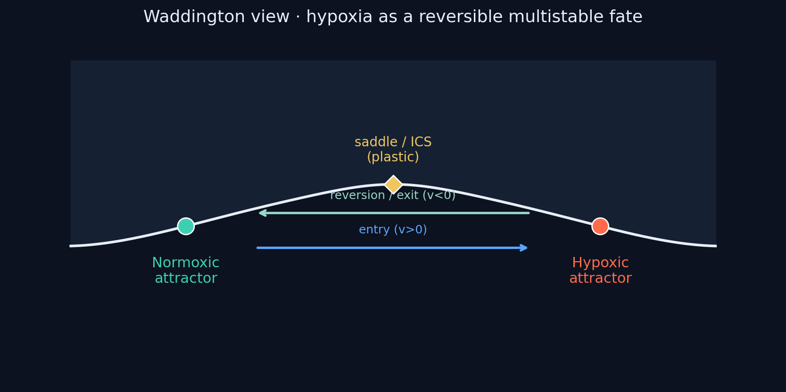
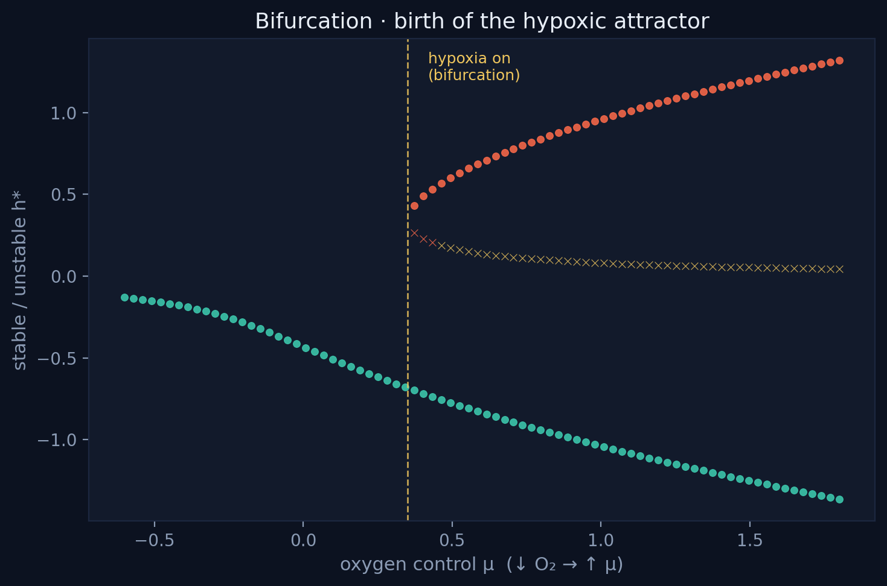
MC38
Fixed points: attractor@h=-0.87, saddle@h=-0.06, attractor@h=0.75
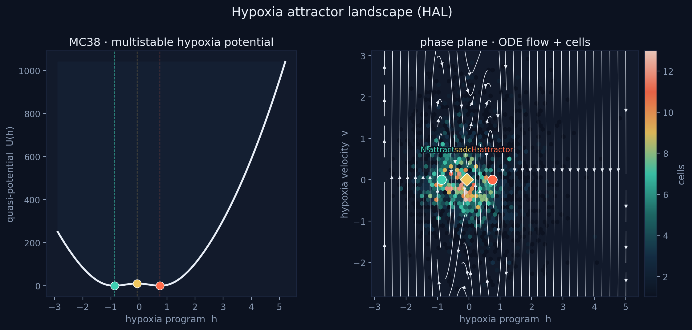
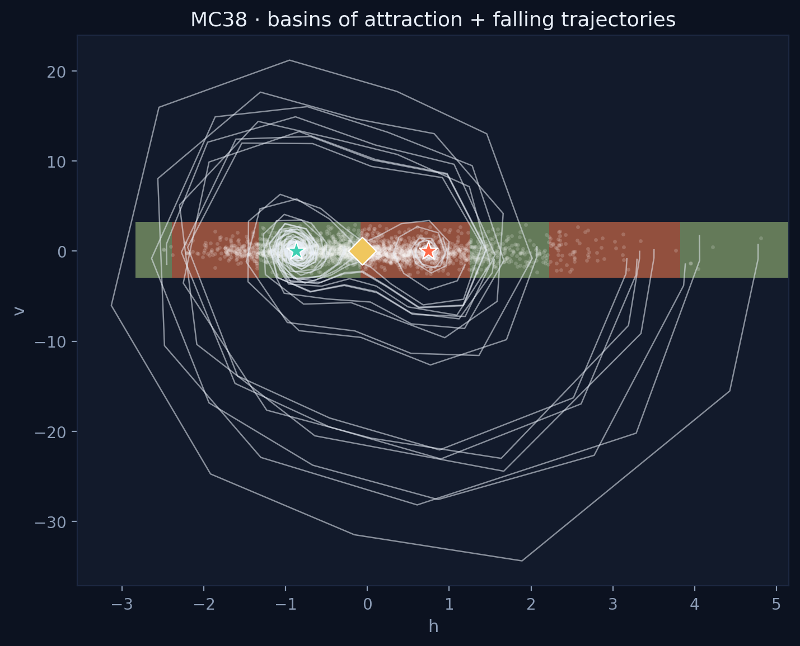
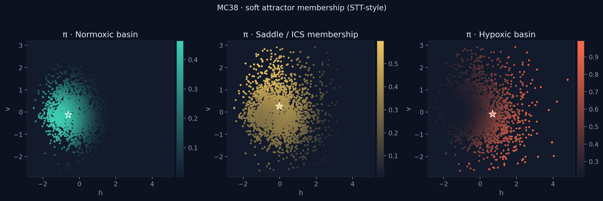
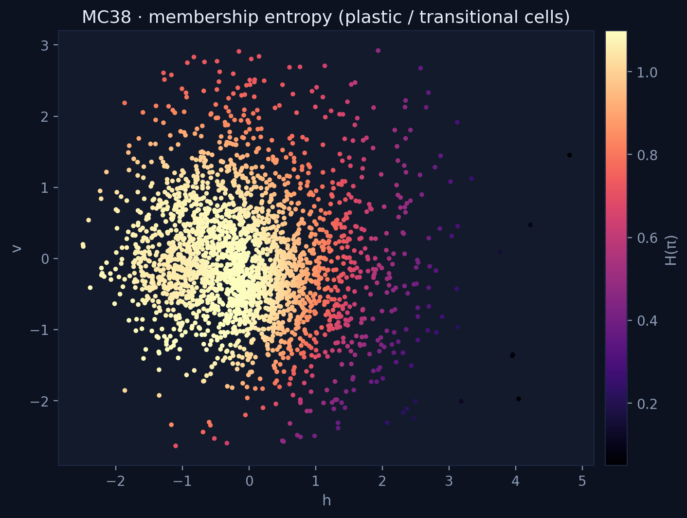
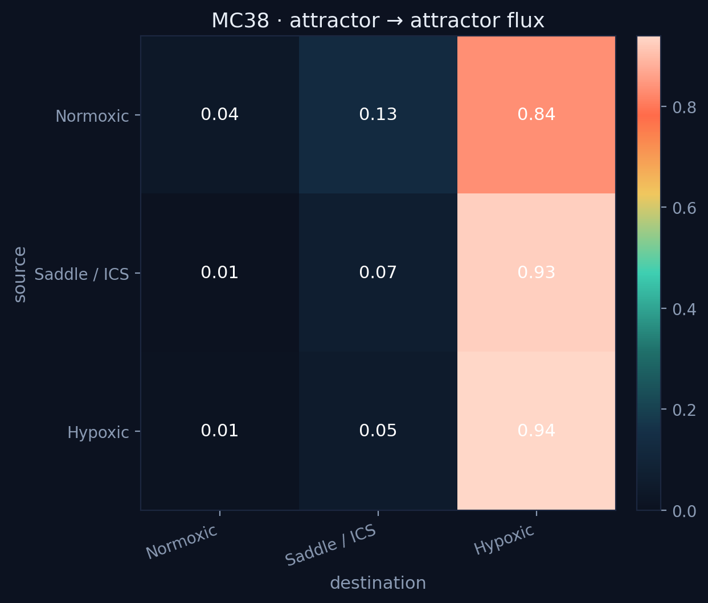
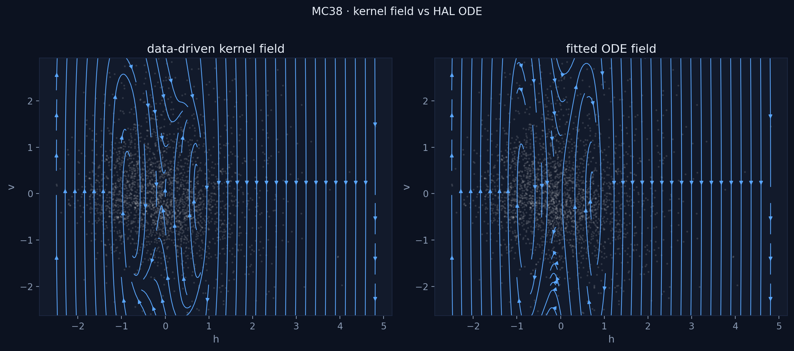
E28S
Fixed points: attractor@h=-0.74, saddle@h=-0.06, attractor@h=0.62
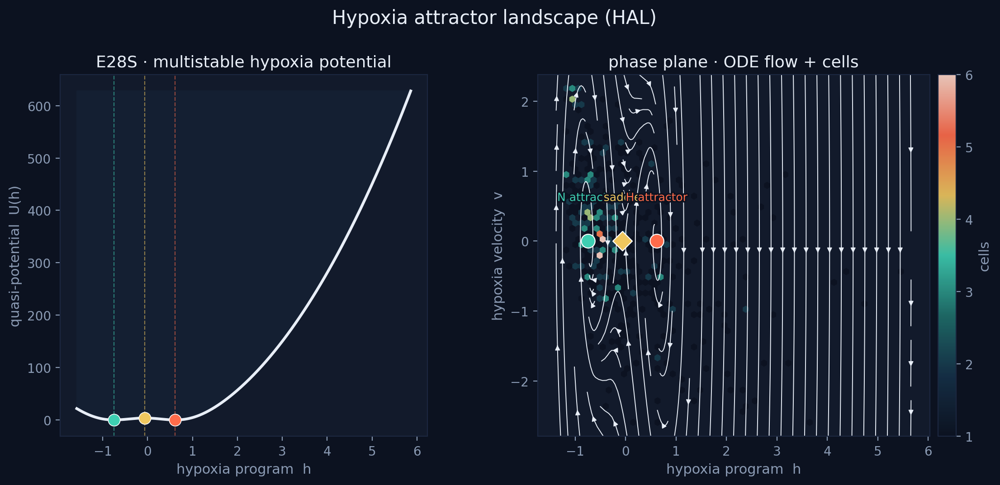
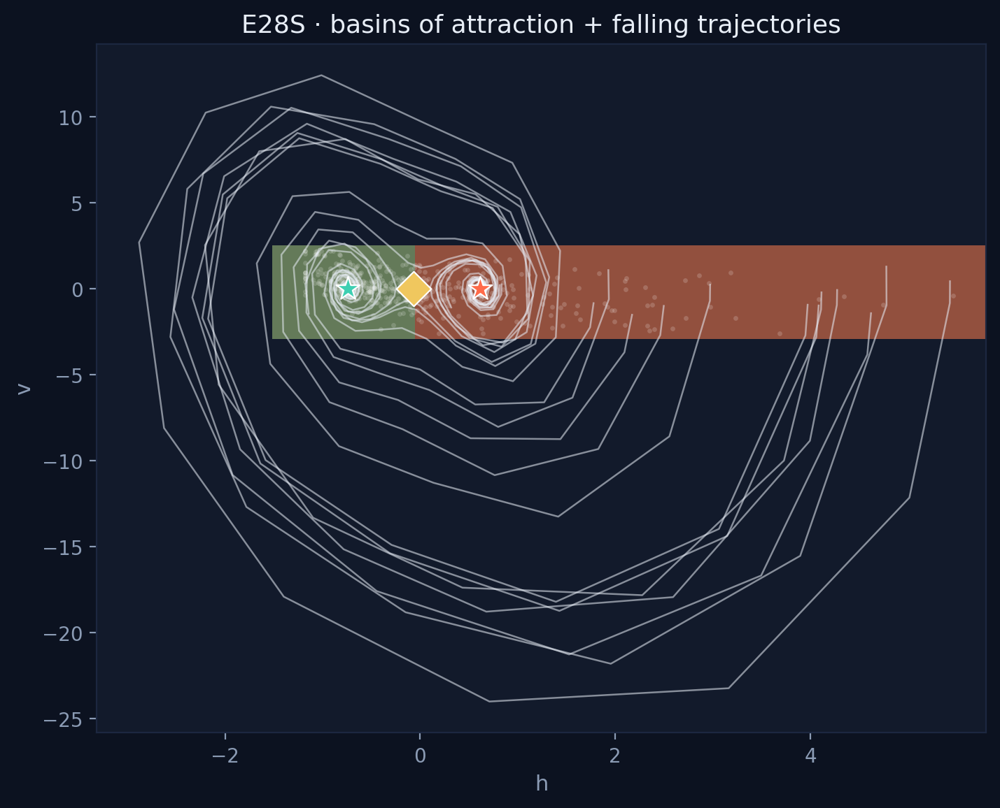
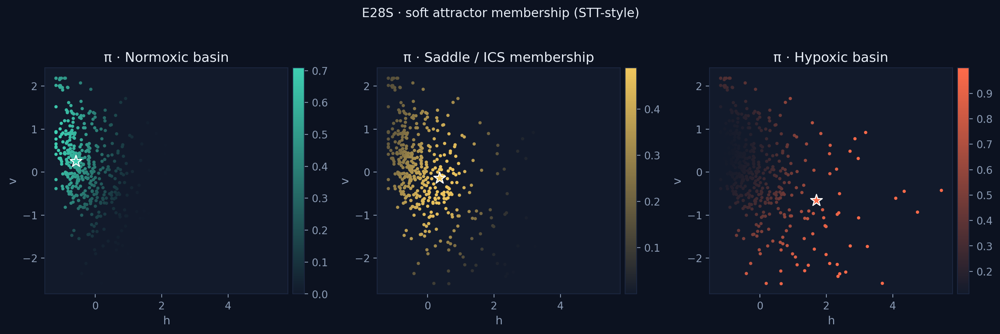
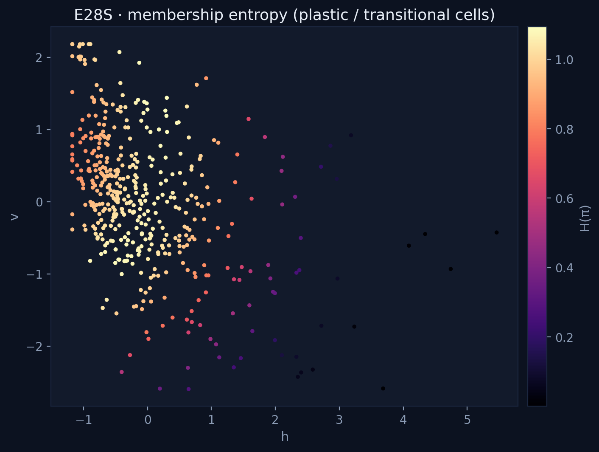
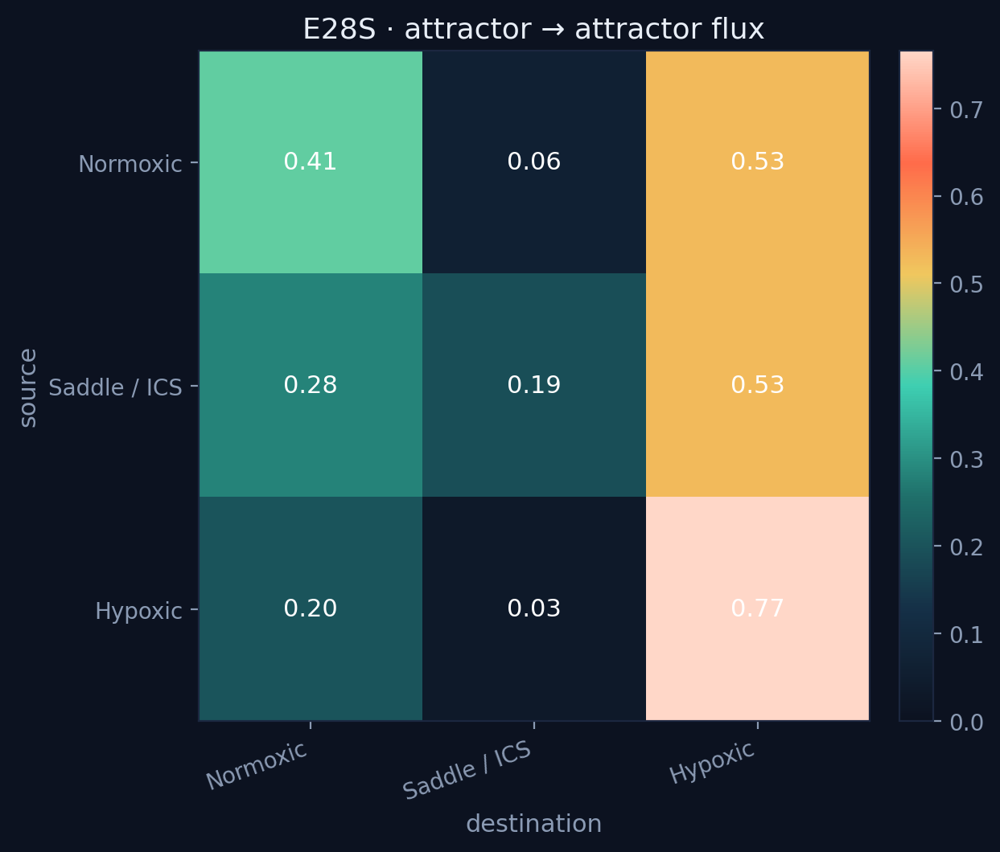
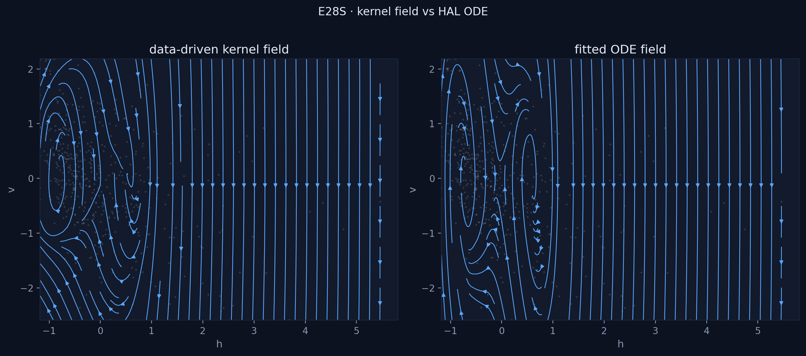